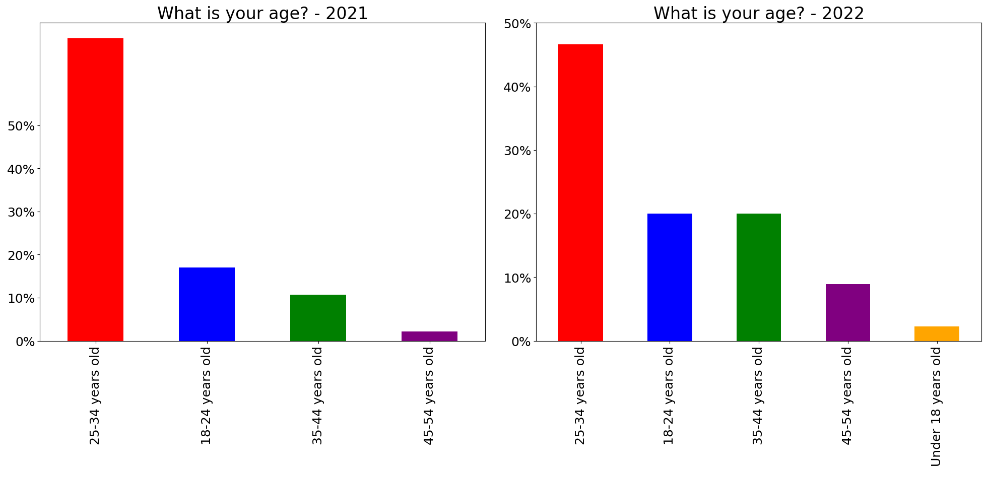
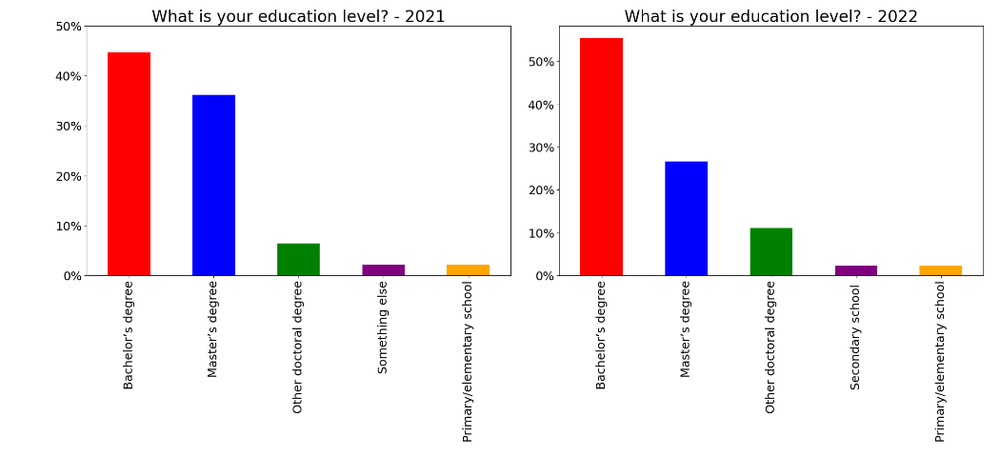
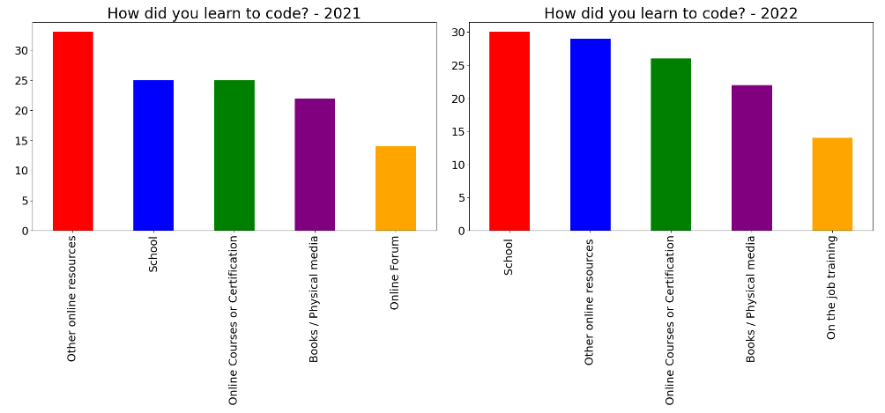
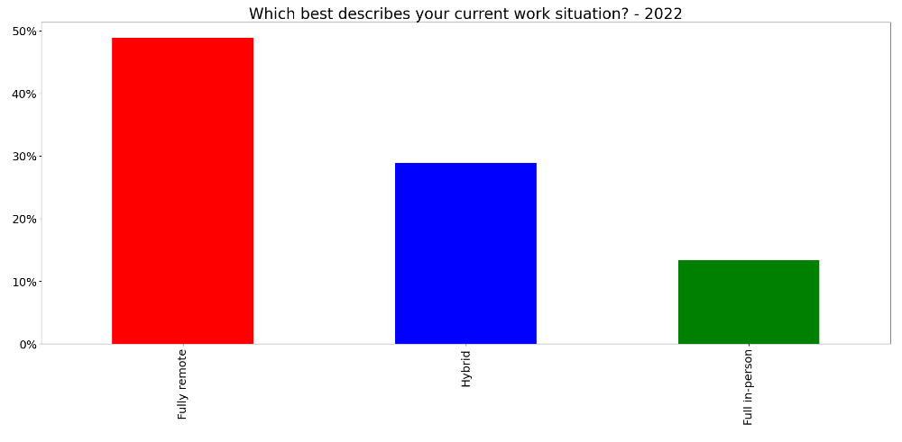
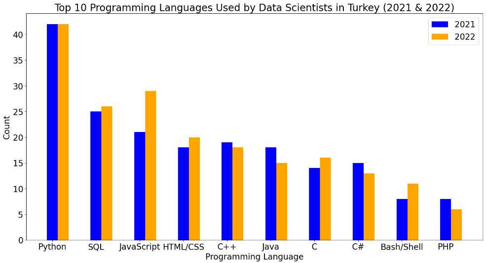
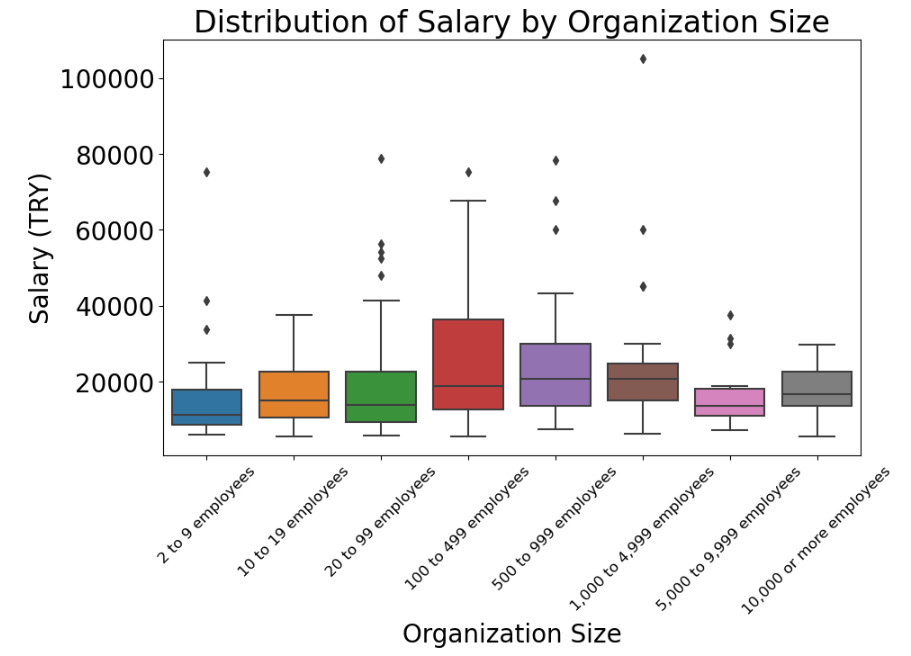
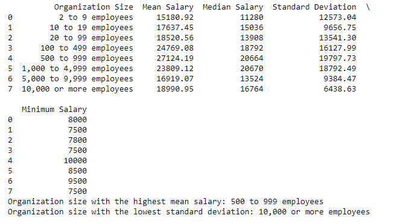
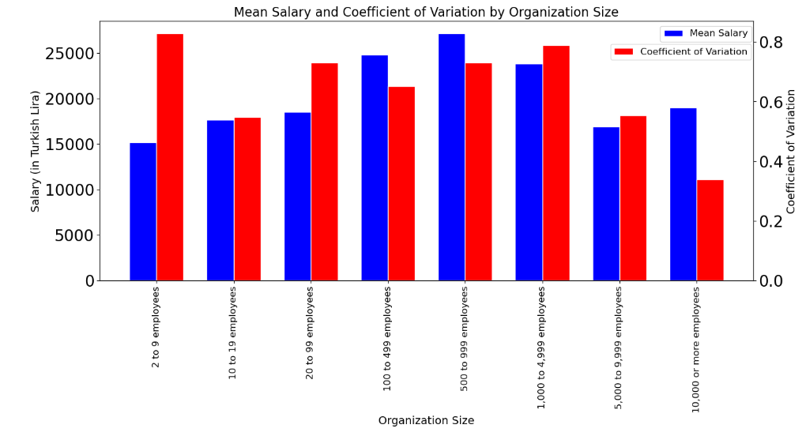
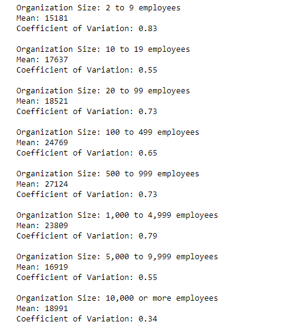

Analysis of Stackoverflow’s 2021 and 2022 Annual Developer Survey for Turkish Data Scientists and Developers
As technology continues to evolve at a rapid pace, data science has become a crucial component for many businesses. In Turkey, data science is gaining traction as more companies look to harness the power of data to gain insights into their customers, products, and services. In this article, we will delve into the results of a survey conducted among Turkish data scientists in 2021 and 2022 and provide insights into the programming languages, collaboration tools, and ideal company sizes for Turkish developers in terms of salary. For this article i used Stackoverflow’s 2021 and 2022 Annual Developer Survey. Before start let me show some description chart for Turkish data scientists:
import pandas as pd
import matplotlib.pyplot as plt
from itertools import product
import seaborn as sns
import numpy as np
# Read in the data for each year
df_22 = pd.read_csv("C:/Udacity/Blogspot/2022/survey_results_public.csv")
df_21 = pd.read_csv("C:/Udacity/Blogspot/2021/survey_results_public.csv")
# Filter for data scientists in Turkey
tr_df_22 = df_22[(df_22['Country'] == 'Turkey') &
df_22['DevType'].str.contains('Data scientist or machine learning specialist')]
tr_df_21 = df_21[(df_21['Country'] == 'Turkey') &
df_21['DevType'].str.contains('Data scientist or machine learning specialist')]

def display_bar_chart(tr_df, column, title, ax):
status_vals = tr_df[column].value_counts()[:5]
(status_vals[:10]/tr_df.shape[0]).plot(kind="bar", ax=ax, color=['red', 'blue', 'green', 'purple', 'orange'])
ax.set_title(title)
ax.set_yticks(np.linspace(0, 0.5, 6))
ax.set_yticklabels(['0%', '10%', '20%', '30%', '40%', '50%'])
fig, ax = plt.subplots(1, 2, figsize=(20, 10))
display_bar_chart(tr_df_21, "Age", "What is your age? - 2021", ax[0])
display_bar_chart(tr_df_22, "Age", "What is your age? - 2022", ax[1])
plt.tight_layout()
plt.rcParams.update({'font.size': 20})
ax[0].tick_params(axis='both', which='major', labelsize=18)
ax[1].tick_params(axis='both', which='major', labelsize=18)
plt.show()

def display_bar_chart(tr_df, column, title, ax):
status_vals = tr_df[column].value_counts()[:5]
(status_vals[:10]/tr_df.shape[0]).plot(kind="bar", ax=ax,
color=['red', 'blue', 'green', 'purple', 'orange'])
ax.set_title(title)
ax.set_yticks(np.arange(0, 0.6, 0.1)) # set tick positions
ax.set_yticklabels(['0%', '10%', '20%', '30%', '40%', '50%']) # set tick labels
fig, ax = plt.subplots(1, 2, figsize=(20, 10))
display_bar_chart(tr_df_21, "EdLevel",
"What is your education level? - 2021", ax[0])
display_bar_chart(tr_df_22, "EdLevel",
"What is your education level? - 2022", ax[1])
plt.tight_layout()
plt.rcParams.update({'font.size': 20})
ax[0].tick_params(axis='both', which='major', labelsize=18)
ax[1].tick_params(axis='both', which='major', labelsize=18)
plt.show()

def display_bar_chart(tr_df, column, title, ax):
# Split the answers and sum the counts of each split answer
split_answers = tr_df[column].str.split(";", expand=True).stack().value_counts()
# Plot the top 5 split answers
split_answers[:5].plot(kind="bar", ax=ax, color=['red', 'blue', 'green', 'purple', 'orange']);
ax.set_title(title)
fig, ax = plt.subplots(1, 2, figsize=(20, 10))
display_bar_chart(tr_df_21, "LearnCode", "How did you learn to code? - 2021", ax[0])
display_bar_chart(tr_df_22, "LearnCode", "How did you learn to code? - 2022", ax[1])
plt.tight_layout()
plt.rcParams.update({'font.size': 20})
ax[0].tick_params(axis='both', which='major', labelsize=18)
ax[1].tick_params(axis='both', which='major', labelsize=18)
plt.show()

def display_bar_chart(tr_df, column, title, ax):
status_vals = tr_df[column].value_counts()[:5]
(status_vals[:10]/tr_df.shape[0]).plot(kind="bar", ax=ax, color=['red', 'blue', 'green', 'purple', 'orange'])
ax.set_title(title)
ax.set_yticks(np.linspace(0, 0.5, 6))
ax.set_yticklabels(['0%', '10%', '20%', '30%', '40%', '50%'])
fig, ax = plt.subplots(1, figsize=(20, 10))
display_bar_chart(tr_df_22, "RemoteWork", "Which best describes your current work situation? - 2022", ax)
plt.tight_layout()
plt.rcParams.update({'font.size': 20})
ax.tick_params(axis='both', which='major', labelsize=18)
plt.show()
Which programming language using among Turkish Data Scientists?
The survey results show that Python remains the most popular programming language among Turkish data scientists, this is followed by SQL and JavaScript. It is interesting to note that JavaScript has seen the highest increase in usage between 2021 and 2022, with a 9% increase in adoption. However, it is too early to determine if this trend will continue as we only have data for two years.

# Filter for data scientists in Turkey
tr_df_22 = df_22[(df_22['Country'] == 'Turkey') &
df_22['DevType'].str.contains('Data scientist or machine learning specialist')].dropna(subset=['LanguageHaveWorkedWith'])
tr_df_21 = df_21[(df_21['Country'] == 'Turkey') &
df_21['DevType'].str.contains('Data scientist or machine learning specialist')].dropna(subset=['LanguageHaveWorkedWith'])
# Split the data in the "LanguageHaveWorkedWith" column
tr_df_22['LanguageHaveWorkedWith'] = tr_df_22['LanguageHaveWorkedWith'].str.split(
";")
tr_df_21['LanguageHaveWorkedWith'] = tr_df_21['LanguageHaveWorkedWith'].str.split(
";")
# Create a dataframe with only the programming languages and their count for 2022
programming_2022 = tr_df_22.explode('LanguageHaveWorkedWith').groupby(
'LanguageHaveWorkedWith').size().reset_index(name='2022')
programming_2022.columns = ['LanguageHaveWorkedWith', '2022']
# Create a dataframe with only the programming languages and their count for 2021
programming_2021 = tr_df_21.explode('LanguageHaveWorkedWith').groupby(
'LanguageHaveWorkedWith').size().reset_index(name='2021')
programming_2021.columns = ['LanguageHaveWorkedWith', '2021']
# Merge the two dataframes
programming = programming_2021.merge(programming_2022, on='LanguageHaveWorkedWith')
# Add a new column with the sum of 2022 and 2021 counts
programming = programming.assign(sum=programming.apply(
lambda x: x['2022'] + x['2021'] , axis=1)).sort_values(by='sum', ascending=False)
# Display only the top 10 results
top_10 = programming.head(10)
# Plot the bar chart
bar_width = 0.25
x = np.arange(len(top_10))
fig = plt.figure(figsize=(20, 10))
plt.bar(x + bar_width, top_10['2021'], bar_width, color='blue', label='2021')
plt.bar(x + bar_width * 2, top_10['2022'],
bar_width, color='orange', label='2022')
# Add labels and title
plt.xticks(x + bar_width, top_10['LanguageHaveWorkedWith'])
plt.xlabel("Programming Language")
plt.ylabel("Count")
plt.title("Top 10 Programming Languages Used by Data Scientists in Turkey (2021 & 2022)")
# Add a legend
plt.legend()
# Show the plot
plt.show()
Which duo is using among Turkish Data Scientists for programming language and collaboration tools?
When it comes to the combination of programming language and collaboration tools, the survey shows that the most commonly used duo among Turkish data scientists is Python and Visual Studio Code, with 44% of respondents using this combination in 2022. This is followed closely by Python and IPython, and Python and PyCharm.

# Filter for data scientists in Turkey
tr_df_22 = df_22[(df_22['Country'] == 'Turkey') &
df_22['DevType'].str.contains('Data scientist or machine learning specialist')]
tr_df_21 = df_21[(df_21['Country'] == 'Turkey') &
df_21['DevType'].str.contains('Data scientist or machine learning specialist')]
#When analyzing the programming languages and collaboration tools used by data scientists in Turkey,
#we need complete and accurate data in order to make meaningful conclusions.
#Therefore, we dropped rows with missing values in the 'LanguageHaveWorkedWith' and 'NEWCollabToolsHaveWorkedWith' columns.
#This ensures that the analysis is based on complete and accurate data, and that the resulting insights are reliable.
subset = ['LanguageHaveWorkedWith', 'NEWCollabToolsHaveWorkedWith']
tr_df_22 = tr_df_22.dropna(subset=subset)
tr_df_21 = tr_df_21.dropna(subset=subset)
# Split the data in the "LanguageHaveWorkedWith" column
tr_df_22['LanguageHaveWorkedWith'] = tr_df_22['LanguageHaveWorkedWith'].str.split(
";")
tr_df_21['LanguageHaveWorkedWith'] = tr_df_21['LanguageHaveWorkedWith'].str.split(
";")
tr_df_22['NEWCollabToolsHaveWorkedWith'] = tr_df_22['NEWCollabToolsHaveWorkedWith'].str.split(
";")
tr_df_21['NEWCollabToolsHaveWorkedWith'] = tr_df_21['NEWCollabToolsHaveWorkedWith'].str.split(
";")
result = []
for index, row in tr_df_22.iterrows():
languages = row['LanguageHaveWorkedWith']
tools = row['NEWCollabToolsHaveWorkedWith']
result.extend(list(product(languages, tools)))
result_df = pd.DataFrame(
result, columns=['LanguageHaveWorkedWith', 'NEWCollabToolsHaveWorkedWith'])
# Get the counts of each combination of LanguageHaveWorkedWith and NEWCollabToolsHaveWorkedWith
result_df_counts = result_df.groupby(
['LanguageHaveWorkedWith', 'NEWCollabToolsHaveWorkedWith']).size().reset_index(name='counts')
# Create a pivot table to create the heatmap
pivot_table = result_df_counts.pivot(
index='LanguageHaveWorkedWith', columns='NEWCollabToolsHaveWorkedWith', values='counts')
# Create the heatmap
plt.figure(figsize=(30, 15))
sns.heatmap(pivot_table, annot=False, cmap='YlGnBu')
plt.xticks(rotation=90, fontsize=16)
plt.yticks(fontsize=16)
# Show the plot
plt.show()
How does company size affect the salary of Turkish developers in 2022?
Before proceeding with the analysis, we will consider Turkish developers instead of data scientists due to the limited availability of data. The survey results indicate that the company size with the highest mean salary is 500-999 employees. However, the standard deviation for this category is also the highest among all the categories. This indicates that there is a higher degree of variability in salaries within this category, which may not be desirable for some individuals.
 
# Filtering the data for only Turkish developers who are employed full-time and using TRY (Turkish Lira) as their currency
turkey_programming_2022 = df_2022[(df_2022['Country'] == 'Turkey') &
(df_2022['MainBranch'] == 'I am a developer by profession') &
(df_2022['Employment'].str.contains('Employed, full-time')) &
(df_2022['Currency'].str.contains('TRY Turkish lira'))]
# Removing the rows that have "Just me - I am a freelancer, sole proprietor, etc." as their organization size
turkey_programming_2022 = turkey_programming_2022[turkey_programming_2022['OrgSize']
!= 'Just me - I am a freelancer, sole proprietor, etc.']
# Removing the rows with missing values in the 'CompTotal' column since we cannot calculate the salary without this information.
# Dropping the rows with missing values in 'CompTotal' column
turkey_programming_2022 = turkey_programming_2022.dropna(subset=['CompTotal'])
# Removing the rows with 'CompTotal' less than 7500
turkey_programming_2022 = turkey_programming_2022[turkey_programming_2022['CompTotal'] >= 7500]
# Removing the rows with 'ConvertedCompYearly' less than 5000
turkey_programming_2022 = turkey_programming_2022[turkey_programming_2022['ConvertedCompYearly'] >= 5000]
# Categories of organization size
org_size_categories = ['2 to 9 employees', '10 to 19 employees', '20 to 99 employees', '100 to 499 employees',
'500 to 999 employees', '1,000 to 4,999 employees', '5,000 to 9,999 employees', '10,000 or more employees']
# Calculating the mean salary for each category of organization size
comp_means = []
for size in org_size_categories:
comp_means.append(round(
turkey_programming_2022[turkey_programming_2022['OrgSize'] == size]['ConvertedCompYearly'].mean()))
# Creating a DataFrame to store the mean salary for each category of organization size
org_size_comp_mean = pd.DataFrame(
{'Organization Size': org_size_categories, 'Mean Salary': comp_means})
# Printing the DataFrame
print(org_size_comp_mean)
# Calculate the descriptive statistics for the salary data
salary_data = []
salary_data_2 = []
mean_list = []
median_list = []
std_list = []
for size in org_size_categories:
data = turkey_programming_2022[turkey_programming_2022['OrgSize'] == size]['ConvertedCompYearly']
data_2 = turkey_programming_2022[turkey_programming_2022['OrgSize'] == size]['CompTotal']
salary_data.append(data)
salary_data_2.append(data_2)
mean_list.append(round(data.mean(), 2))
median_list.append(round(data.median()))
std_list.append(round(data.std(), 2))
# Increase the size of the plot
plt.figure(figsize=(10,6))
plt.rcParams['xtick.labelsize'] = 12
# Creating a box plot to visualize the distribution of the salary data for each category of organization size
sns.boxplot(x='OrgSize', y='ConvertedCompYearly', data=turkey_programming_2022, order=org_size_categories)
plt.xlabel('Organization Size')
plt.ylabel('Salary (TRY)')
plt.title('Distribution of Salary by Organization Size')
plt.xticks(rotation=45) # Rotate x-axis labels for better readability
plt.show()
# Create a DataFrame with the mean, median, and standard deviation for each organization size category
df = pd.DataFrame({'Organization Size': org_size_categories, 'Mean Salary': mean_list, 'Median Salary': median_list, 'Std Deviation': std_list})
# Print the dataframe
print(df)
# Find the organization size with the highest mean salary
max_mean_salary = df['Mean Salary'].max()
max_mean_salary_size = df.loc[df['Mean Salary'] == max_mean_salary, 'Organization Size'].iloc[0]
print('Organization size with the highest mean salary:', max_mean_salary_size)
# Find the organization size with the lowest standard deviation
min_std_dev = df['Std Deviation'].min()
min_std_dev_size = df.loc[df['Std Deviation'] == min_std_dev, 'Organization Size'].iloc[0]
print('Organization size with the lowest standard deviation:', min_std_dev_size)
What is the ideal company size for Turkish developers in terms of salary?
Upon closer examination, we can see that the organization size category with the second-highest mean salary (100 to 499 employees) has a coefficient of variation of 0.65, which is lower than some of the other categories with higher means. This indicates that there may be less variation in salaries within this category, making it a more attractive option for those seeking a fair and consistent salary. Therefore, the best company size for job seekers seeking good salary may be in the range of 100-499 employees.
 
# Create a pandas DataFrame with the data
data = {'Organization Size': ['2 to 9 employees', '10 to 19 employees', '20 to 99 employees', '100 to 499 employees', '500 to 999 employees', '1,000 to 4,999 employees', '5,000 to 9,999 employees', '10,000 or more employees'],
'Mean Salary': [15181, 17637, 18521, 24769, 27124, 23809, 16919, 18991]}
df = pd.DataFrame(data)
# Calculate the coefficient of variation for each category
for i in range(len(df)):
org_size = df.loc[i, 'Organization Size']
mean = df.loc[i, 'Mean Salary']
stdev = [12573.04, 9656.75, 13541.3, 16127.99, 19797.73, 18792.49, 9384.47, 6438.63][i]
cv = stdev / mean
print(f'Organization Size: {org_size}\nMean: {mean}\nCoefficient of Variation: {cv:.2f}\n')
import pandas as pd
import matplotlib.pyplot as plt
# Create a pandas DataFrame with the data
data = {'Organization Size': ['2 to 9 employees', '10 to 19 employees', '20 to 99 employees', '100 to 499 employees', '500 to 999 employees', '1,000 to 4,999 employees', '5,000 to 9,999 employees', '10,000 or more employees'],
'Mean Salary': [15181, 17637, 18521, 24769, 27124, 23809, 16919, 18991],
'Coefficient of Variation': [12573.04/15181, 9656.75/17637, 13541.3/18521, 16127.99/24769, 19797.73/27124, 18792.49/23809, 9384.47/16919, 6438.63/18991]}
df = pd.DataFrame(data)
# Create a grouped bar chart showing the mean and coefficient of variation for each organization size category
fig, ax1 = plt.subplots(figsize=(15, 6))
bar_width = 0.35
r1 = range(len(df))
r2 = [x + bar_width for x in r1]
# Plot the mean salary on the primary y-axis
ax1.bar(r1, df['Mean Salary'], color='blue', width=bar_width, edgecolor='white', label='Mean Salary')
ax1.set_xlabel('Organization Size', fontsize=14)
ax1.set_ylabel('Salary (in Turkish Lira)', fontsize=14)
ax1.set_xticks([r + bar_width / 2 for r in range(len(df))])
ax1.set_xticklabels(df['Organization Size'], rotation=90, fontsize=12)
# Create a secondary y-axis for the coefficient of variation
ax2 = ax1.twinx()
ax2.bar(r2, df['Coefficient of Variation'], color='red', width=bar_width, edgecolor='white', label='Coefficient of Variation')
ax2.set_ylabel('Coefficient of Variation', fontsize=14)
# Set chart title
plt.title('Mean Salary and Coefficient of Variation by Organization Size', fontsize=16)
# Place both legends inside the chart and at the right side
ax1.legend(loc='upper left', bbox_to_anchor=(0.85, 1), fontsize=12)
ax2.legend(loc='upper left', bbox_to_anchor=(0.774, 0.93), fontsize=12)
plt.show()
# Calculate the coefficient of variation for each category
for i in range(len(df)):
org_size = df.loc[i, 'Organization Size']
mean = df.loc[i, 'Mean Salary']
stdev = [12573.04, 9656.75, 13541.3, 16127.99, 19797.73, 18792.49, 9384.47, 6438.63][i]
cv = stdev / mean
print(f'Organization Size: {org_size}\nMean: {mean}\nCoefficient of Variation: {cv:.2f}\n')
In conclusion, Python remains the most popular programming language among Turkish data scientists, and Python and Visual Studio Code is the most commonly used combination of programming language and collaboration tool. When it comes to the ideal company size for Turkish developers in terms of salary, the range of 100-499 employees may provide a more consistent and fair salary than larger companies.